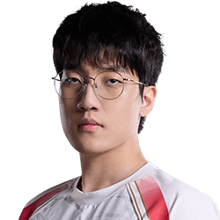

Equipos de la LPL
- AL AL
 BLG BLG
BLG BLG- EDG EDG
- IG IG
- JDG JDG
- LGD LGD
- LNG LNG
- NIP NIP
- TES TES
- TT TT
- WBG WBG
- WE WE
LPL · China · solo rangos, sin partida en vivo
En resumen
Los 15 primeros de los 62 jugadores que la LPL (China) tiene en el leaderboard, ordenados por el Elo de su mejor cuenta y medidos en su servidor. La tabla va de Challenger · 2437 LP a Challenger · 2019 LP. Medido el 2026-09-03.
| # | Jugador | Equipo | Rol | Elo | Victorias | KDA |
|---|---|---|---|---|---|---|
| 1 | Wei | IG | Jungle | Challenger · 2437 LP | 55 % de 748 | 3.43 |
| 2 | BuLLDoG | EDG | Mid | Challenger · 2408 LP | 53 % de 1028 | 2.80 |
| 3 | Kael | AL | Support | Challenger · 2376 LP | 56 % de 586 | 2.97 |
| 4 | HOYA | NIP | Top | Challenger · 2320 LP | 52 % de 994 | 1.88 |
| 5 | Moham | WBG | Support | Challenger · 2264 LP | 55 % de 640 | 3.45 |
| 6 |  Tarzan |
AL | Jungle | Challenger · 2264 LP | 53 % de 860 | 2.86 |
| 7 | MISSING | LNG | Support | Challenger · 2177 LP | 54 % de 784 | 2.80 |
| 8 | Nia | LNG | Mid | Challenger · 2163 LP | 52 % de 985 | 2.31 |
| 9 | Rookie | IG | Mid | Challenger · 2161 LP | 56 % de 589 | 2.37 |
| 10 | Shaoye | LGD | Bot | Challenger · 2141 LP | 53 % de 922 | 2.73 |
| 11 | Jiejie | EDG | Jungle | Challenger · 2052 LP | 54 % de 636 | 3.37 |
| 12 | GALA | JDG | Bot | Challenger · 2047 LP | 55 % de 673 | 3.08 |
| 13 | Xiaohu | WBG | Mid | Challenger · 2042 LP | 55 % de 678 | 2.64 |
| 14 | Junhao | TT | Jungle | Challenger · 2037 LP | 53 % de 594 | 3.39 |
| 15 | xiaofang | JDG | Jungle | Challenger · 2019 LP | 53 % de 739 | 2.42 |
De esta liga se publica el Elo, no el Riot ID: las cuentas con nombre se indexan cuando un servidor sigue la liga, y ahora mismo eso está hecho en la LEC.
Cuántos de los jugadores de la LPL tienen cada campeón entre los que más juegan: Ambessa lo llevan 16, que es el más extendido de la liga. Es presencia, no partidas — el leaderboard dice qué juega cada uno, no cuántas veces.
| Campeón | Jugadores que lo llevan | El de más Elo que lo juega |
|---|---|---|
| Ambessa | 16 | xiaofang |
| Jayce | 15 | HOYA |
| Bard | 10 | Kael |
| Ezreal | 10 | Shaoye |
| Lee Sin | 10 | Wei |
| Ryze | 10 | BuLLDoG |
| Gnar | 9 | HOYA |
| Naafiri | 8 | Wei |
Los 12 próximos partidos de la LPL, repartidos en 10 días, con la hora de inicio en UTC. El primero es LGD contra AL, el viernes 4 de septiembre a las 09:00 UTC.
Playoffs · Bo5
Playoffs · Bo5
Playoffs · Bo5
Playoffs · Bo5
Playoffs · Bo5
Playoffs · Bo5
Playoffs · Bo5
Playoffs · Bo5
Finals · Bo5
Regional Qualifier · Bo5
Regional Qualifier · Bo5
Regional Qualifier · Bo5
Calendario oficial de la LPL en lolesports, leído el 2026-09-03. Las horas de la LPL van aquí en UTC, no en hora local: esta página se sirve igual en todo el mundo.
Wei (IG, Jungle), con Challenger · 2437 LP. Es el más alto de los 62 jugadores de la LPL que JetaDirectaBot tiene indexados.
62 jugadores en 12 equipos, con unas 213 cuentas de SoloQ entre todos: una media de 3.4 cuentas por jugador. Sale de contar el leaderboard de la LPL, no de una estimación.
No en vivo. La LPL juega en servidores que la API de Riot no expone, así que se pueden ver los rangos y la clasificación, pero no detectar la partida en curso.
AL (AL), BLG (BLG), EDG (EDG), IG (IG), JDG (JDG), LGD (LGD), LNG (LNG), NIP (NIP), TES (TES), TT (TT), WBG (WBG), WE (WE).
LGD GAMING contra Anyone's Legend, el viernes 4 de septiembre a las 09:00 UTC (Playoffs). Después hay 11 más repartidos en 10 días de calendario.
Porque la LPL se juega en servidores que la API pública de Riot no expone. El rango y la clasificación sí se pueden leer, pero la consulta de partida en curso no responde para esas cuentas, así que avisar de una partida en directo no es posible sin inventarse el dato.
JetaDirectaBot publica este aviso en tu canal de Discord —o en tu chat privado— en cuanto el jugador entra en partida, con las 20 ligas del catálogo. Gratis.
El plan gratuito sigue una liga; hasta 4 con los de pago, que es el techo real por el cupo de peticiones de Riot.